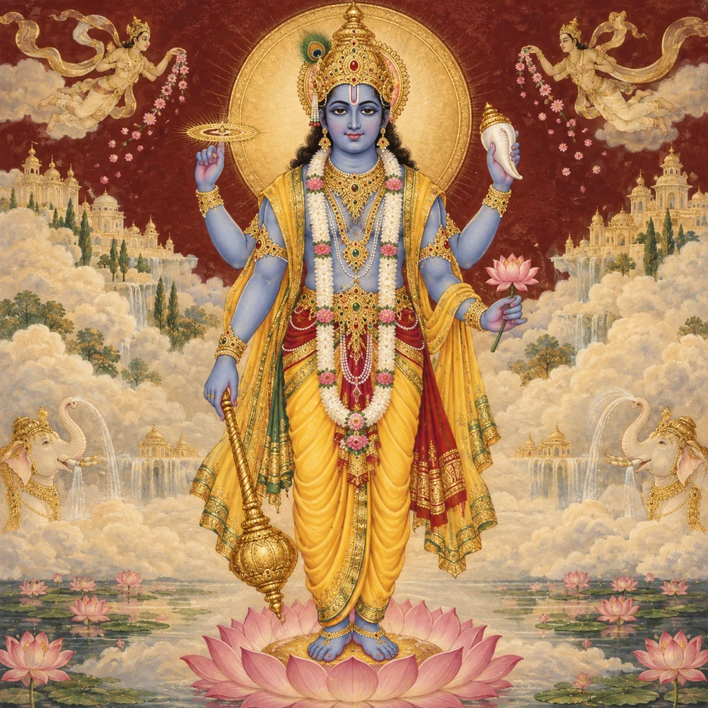
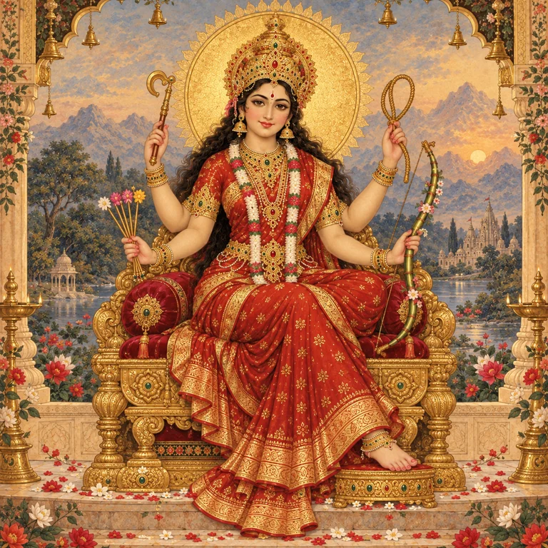
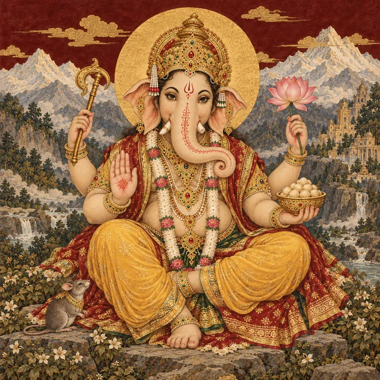
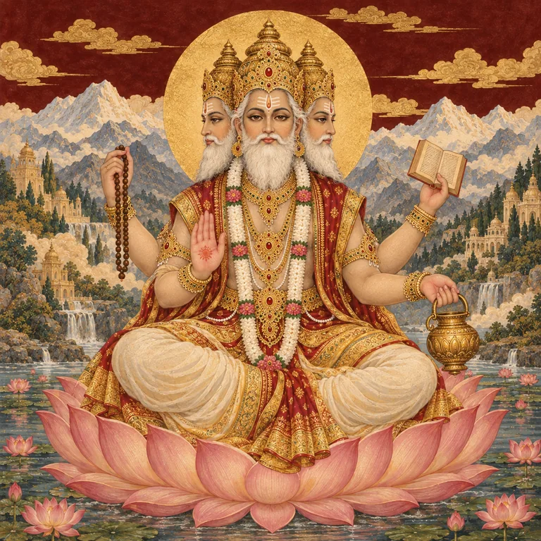
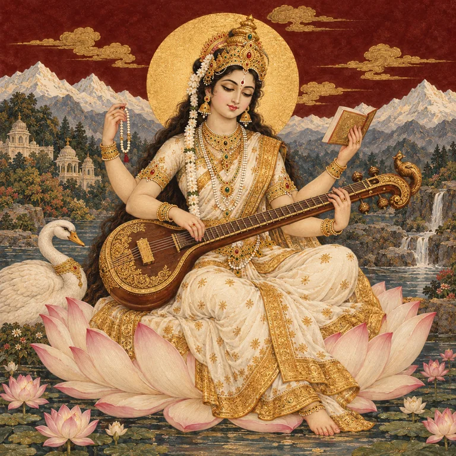
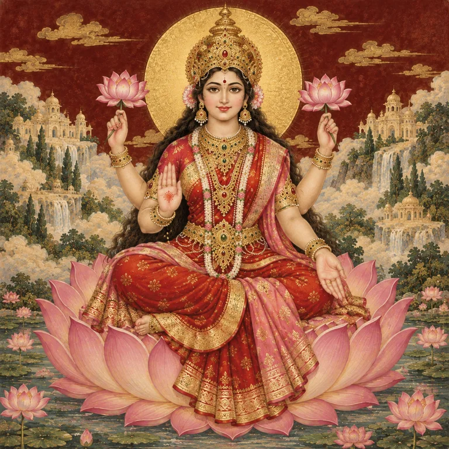
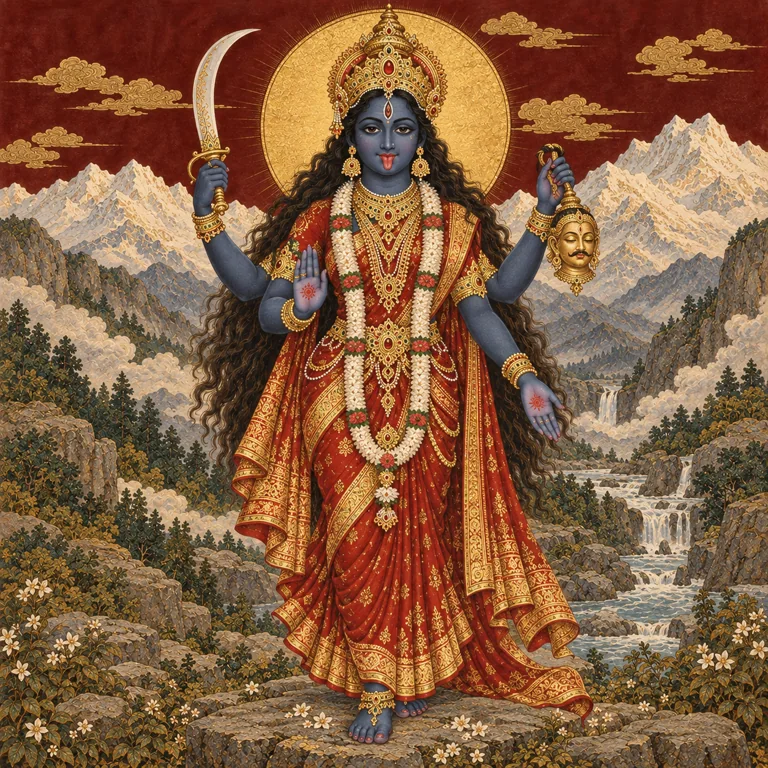

Shiva
Traditions that revere Shiva as supreme.
Meet ShivaTHE DIVINE / AN INTRODUCTION
Discover the divine forms, traditions and stories through which generations have approached the sacred.
Names and forms.
Stories and traditions.
Questions that lead deeper.
01 / UNDERSTANDING THE DIVINE
A deity’s meaning comes alive within a tradition.
Many Hindus approach the Divine through a chosen form. Different schools understand the relationship between divine forms and ultimate reality differently. This page introduces several traditions without making one viewpoint the rule for all. [1]
Traditions that revere Shiva as supreme.
Meet ShivaTraditions centred on Vishnu and forms such as Rama and Krishna.
Meet VishnuTraditions that revere Shakti or Devi as supreme.
Meet DeviTraditions that honour several deities as forms of the Divine.
Explore the forms02 / MEET THE DEITIES
A selection of twelve introductions. This is a starting point, not a complete list or a ranking. Open any card to read more.

SHAIVA TRADITIONS
Meditation, cosmic dance and transformation.
Shiva is revered as supreme in Shaiva traditions. His forms include Nataraja, the Lord of Dance. Describing him only as a “destroyer” leaves much of his significance unexplored.
Dedicated page and stories to come.

VAISHNAVA TRADITIONS
Preservation, divine presence and avatars.
Vishnu is central to Vaishnava traditions. Many narratives describe his appearance through avatars, including Rama and Krishna. Different lineages explain the relationship between these divine forms in different ways.
Dedicated page and stories to come.

THE DIVINE MOTHER
The Goddess in many names and forms.
Devi means “goddess.” In Shakta traditions the Divine Mother is supreme. Durga, Kali, Lakshmi and Saraswati are among widely worshipped goddesses; their relationships are explained differently by different texts and traditions.
Dedicated page and stories to come.

BEGINNINGS & WISDOM
The elephant-headed Lord of Obstacles.
Ganesha is widely invoked at the start of undertakings. In the devotional teachings of Himalayan Academy, he both removes obstacles and places them to guide the devotee. His worship extends across several Hindu traditions.
Dedicated page and stories to come.

CREATION
The deity associated with cosmic creation.
In the Trimurti account, Brahma is associated with creation, Vishnu with preservation and Shiva with dissolution. Brahma is distinct from Brahman, the philosophical term for ultimate reality. This threefold account does not encompass every Hindu theology.
Dedicated page and stories to come.

LEARNING & THE ARTS
Knowledge, speech and creative expression.
Saraswati is widely associated with learning, speech and the arts. Her presence in worship offers an entrance into the tradition’s relationship with education, music and sacred language.
Dedicated page and stories to come.

PROSPERITY & WELL-BEING
Abundance, good fortune and flourishing.
Lakshmi is widely worshipped in connection with prosperity and well-being. Her significance includes the feminine Divine; treating her merely as a symbol of money gives an incomplete picture.
Dedicated page and stories to come.

POWER & PROTECTION
The Mother Goddess as a powerful protector.
Durga is celebrated in goddess traditions. Sacred art and the Devi Mahatmya depict her battles with destructive forces, including Mahishasura. These narratives offer rich ground for exploring divine protection.
Dedicated page and stories to come.

FIERCE COMPASSION
A fierce form of the Goddess.
Kali’s formidable imagery belongs to a devotional world in which she is also revered as Mother and protector. In the Devi Mahatmya, she appears in the Goddess’s battles. Her meaning deserves more context than her appearance alone.
Dedicated page and stories to come.

THE RAMAYANA
Divine kingship, duty and the epic journey.
Rama is the central figure of the Ramayana and is revered as an avatar of Vishnu. His story connects with Sita, Hanuman and the challenges of dharma. The epic has many retellings.
Dedicated page and stories to come.

DEVOTION & THE GITA
A beloved divine form and spiritual teacher.
Krishna draws devotees through many narratives and forms of worship. In the Bhagavad Gita, he teaches Arjuna about action and spiritual life. His place within Vaishnava theology varies among lineages.
Dedicated page and stories to come.

DEVOTION & SERVICE
Courage and devoted service to Rama.
Hanuman plays a central role in the Ramayana. He is revered for strength and for devotion to Rama, offering a way to explore the relationship between spiritual power, humility and service.
Dedicated page and stories to come.
Divine forms and relationships may overlap. The labels above are reading guides, not exclusive categories.
03 / A QUESTION WORTH EXPLORING
There is no single number that serves as a complete inventory for every Hindu tradition. A number in a sacred text must be read within that text’s own conversation.
ONE SCRIPTURAL ACCOUNT
In Brihadaranyaka Upanishad 3.9, Shakalya asks Yajnavalkya how many gods there are. The dialogue moves through several answers, including thirty-three, and eventually one. [6]
The passage identifies eight Vasus, eleven Rudras, twelve Adityas, Indra and Prajapati. These are the thirty-three of this particular account—not the twelve deities introduced above. [6]
This dialogue should not be treated as a universal headcount. Its questions move toward the relationship between divine multiplicity and an underlying unity.
Read chapter 3.9 with commentary04 / SOURCES & FURTHER READING
Religious organisations explain their traditions from within; museum essays discuss sacred art. The Upanishad link includes a primary text with Swami Krishnananda’s commentary.
CONTINUE THE JOURNEY
Our story collection is taking shape. In the meantime, explore the foundations and the sacred literature behind these traditions.